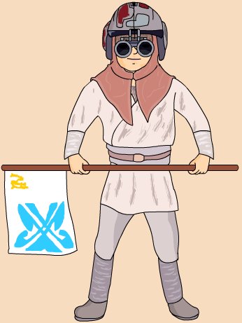

| Place in Boonta | 1st- 15.42:655 |
| Nick name | Annie |
| Classification | Human |
| Gender | Male |
| Height | 4'5'' |
| Home World | Tatooine |
| Podracer | Modified Radon-Ulzer 620C Racing engines |
Anakin Skywalker is the only human who can podrace. He is strong with the force. His mother, Shmi Skywalker, gave birth to Anakin in an immaculate conception thought to be the will of the force. Skywalker had never won a podrace before. In a previous race, Sebulba took out Anakin's pod with his flame jets. Anakin won the Boonta against all odds. During the race, Anakin was faced with many obstacles. His pod stalled at the start of the race, one of his tethers disconnected, and a piece of his pod fell off due to sabotage. He came out on top and earned his freedom due to a bet between his owner, Watto, and Jedi Master Qui-Gon Jinn. He left Tatooine to become a Jedi and eventually fulfilled his destiny as the one who would bring balance to the force.